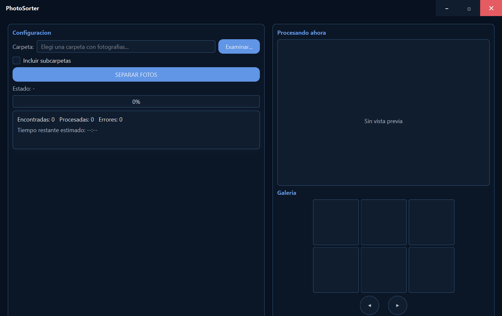

Manual de marca · v1.0
PhotoSorter
Logo, color, tipografía y uso de la marca dentro y fuera de la aplicación.
VERSIÓN 1.0 · OCTUBRE 2026ORGANIZACIÓN DE FOTOS RÁPIDA, SIMPLE Y LOCAL
01 · La marca
Una foto colgada de un broche.
El logo de PhotoSorter es una copia fotográfica colgada a secar: un marco doble, las iniciales «PS» y un broche que la sostiene. El broche es el único elemento con color y lo que hace reconocible a la marca.
El monograma
Las iniciales «PS» en mayúsculas, de trazo muy grueso y contorno ondulado, como una imagen que todavía se está revelando. Van en negro sobre fondos claros y en claro sobre fondos oscuros.
El marco
Dos rectángulos concéntricos de línea fina, en formato vertical, que representan el borde de la copia en papel. El marco siempre acompaña al monograma: no se usan las letras solas.
El broche
Un broche de ropa en magenta, centrado sobre el borde superior del marco. Mantiene su color en todas las versiones a color, sea cual sea el fondo.
El nombre
Se escribe PhotoSorter: una sola palabra, con P y S mayúsculas. El logo no incluye el nombre; cuando hace falta nombrar el producto, el nombre va en texto junto al logo o al ícono.
Proporciones
El conjunto mide 13 de ancho por 22,5 de alto, tomando como unidad el ancho del broche. Esa unidad, x, es la base de la construcción y del área de resguardo.
PhotoSorter. Manual de marca
02 · Construcción
Todo se mide en broches.
La unidad x es el ancho del broche. La retícula muestra el logo sobre una grilla de 13 × 22,5 x.

13 x
x
22,5 x
5 x
20 x
Medidas
| Ancho total del logo | 13 x |
| Alto total, del extremo del broche a la base del marco | 22,5 x |
| Alto del marco exterior | 20 x |
| Alto del broche | 5 x |
| Lo que el broche sobresale por encima del marco | 2,5 x |
| Separación entre el marco exterior y el interior | 0,6 x |
| Grosor de las líneas del marco | ⅛ x |
| Monograma «PS», ancho × alto | 8 × 15 x |
El broche va centrado sobre el eje vertical del marco. El monograma queda centrado en el ancho y apoyado hacia la base, dejando libre la franja superior donde entra el broche.
El logo se reproduce siempre a partir de los archivos originales: no se redibuja ni se recompone.
PhotoSorter. Manual de marca
03 · Versiones del logo
Cuatro versiones, un solo broche.
La versión se elige según el fondo. En las versiones a color el broche conserva siempre el mismo magenta.
Positivo
Letras negras y marco grafito. Para fondos blancos o claros: documentos, impresos y web en modo claro.
Negativo
Letras y marco en claro. Para fondos oscuros: es la versión que usa la aplicación, cuya interfaz es siempre oscura.
Monocromo
Todo en negro o todo en blanco. Solo cuando no se puede imprimir color: sellos, grabado, una tinta.
Ícono de aplicación
El negativo sobre un cuadrado de tinta con esquinas redondeadas (radio de 22 % del lado, margen de 12 %). Identifica al programa en el escritorio y la barra de tareas.
PhotoSorter. Manual de marca
04 · Resguardo y tamaños
Espacio para colgar.
El logo necesita aire alrededor para que el marco se lea como un objeto y no se confunda con otros bordes.
2x
2x
Área de resguardo
Alrededor del logo se deja libre, como mínimo, una distancia igual a 2 x: dos veces el ancho del broche. Dentro de esa zona no van textos, bordes ni otros elementos.
Tamaños mínimos
Por debajo de estas medidas las líneas del marco dejan de verse:
· Logo en pantalla: 48 px de alto.
· Logo impreso: 15 mm de alto.
· Ícono de aplicación: 16 px de lado.
Cuando el espacio es menor al mínimo del logo se usa el ícono de aplicación, que tolera tamaños más chicos gracias a su fondo.
Destacado
Uso general
Mínimo · 48 px
Ícono · 48 px
16 px
PhotoSorter. Manual de marca
05 · Color
Tinta, papel y un broche magenta.
Magenta broche#BE0B5F · RGB 190, 11, 95
El broche del logo. Uso exclusivo de la marca.
Negro#000000 · RGB 0, 0, 0
Monograma en positivo.
Grafito#2A2A2A · RGB 42, 42, 42
Líneas del marco en positivo.
Papel#F2F5F8 · RGB 242, 245, 248
Monograma y marco en negativo. Texto principal.
Colores de la interfaz
Tinta#07111F · RGB 7, 17, 31
Fondo de la ventana y del ícono.
Panel#0B1626 · RGB 11, 22, 38
Paneles y barra de título.
Tarjeta#101D2F · RGB 16, 29, 47
Campos y miniaturas.
Borde#294563 · RGB 41, 69, 99
Contornos de paneles y campos.
Texto secundario#B8C2CF · RGB 184, 194, 207
Etiquetas y ayudas.
Azul de acción#6195E5 · RGB 97, 149, 229
Botones y títulos de panel.
Azul, al pasar#4F7FCE · RGB 79, 127, 206
Botón con el cursor encima.
Naranja de avance#F26110 → #F48229
Solo en la barra de progreso.
Rojo#E45B62 · RGB 228, 91, 98
Errores y botón de cerrar.
Rojo, al pasar#C94850 · RGB 201, 72, 80
Cerrar con el cursor encima.
El magenta del broche no se usa en botones, textos ni estados de la interfaz: queda reservado al logo. Las acciones usan el azul; el avance, el naranja; los errores, el rojo.
PhotoSorter. Manual de marca
06 · Tipografía
Inter en la web, Segoe UI en la aplicación.
Aa
Inter
ABCDEFGHIJKLMNÑOPQRSTUVWXYZ
abcdefghijklmnñopqrstuvwxyz
0123456789 · % — « »
Aa
Segoe UI
ABCDEFGHIJKLMNÑOPQRSTUVWXYZ
abcdefghijklmnñopqrstuvwxyz
0123456789 · % — « »
Inter es la tipografía del sitio web y de las piezas de comunicación, incluido este manual. Segoe UI es la tipografía de sistema de Windows: la aplicación la usa tal cual viene instalada, sin distribuir fuentes propias. En macOS la aplicación toma la tipografía de sistema equivalente.
Jerarquía
| Organizá tus fotos | Títulos · Extrabold, interletra −2,5 % |
| Separá, procesá y previsualizá | Subtítulos · Semibold |
| Procesando ahora | Título de panel · Bold, azul de acción |
| Elegí una carpeta con fotografías. | Texto · Regular |
| Tiempo restante estimado: 00:42 | Ayudas · Regular, secundario |
| SEPARAR FOTOS | Rótulos · Bold, mayúsculas, +14 % |
El nombre escrito
Semibold, interletra −2 %. Sobre fondo oscuro «Sorter» puede ir en azul de acción; sobre fondo claro el nombre va entero en tinta.
PhotoSorter. Manual de marca
07 · Logo con nombre
El ícono primero, el nombre al lado.
Cuando el logo aparece junto al nombre —encabezado del sitio, firma, instalador— se usa el ícono de aplicación seguido del nombre escrito.
PhotoSorter
Sobre fondo oscuro
Ícono con un contorno fino en color borde (#294563) para separarlo del fondo. Nombre en blanco, con «Sorter» en azul de acción.
PhotoSorter
Sobre fondo claro
El mismo ícono, sin contorno. Nombre entero en tinta (#07111F).
Proporción
La altura de las mayúsculas del nombre es la mitad del alto del ícono. Ícono y nombre se alinean por el centro.
Separación
Entre el ícono y el nombre se deja un cuarto del lado del ícono. El conjunto respeta el mismo resguardo que el logo.
Versión vertical
Si el espacio es angosto, el nombre va centrado debajo del logo completo, a una distancia de 2 x, y nunca más ancho que el marco.
PhotoSorter. Manual de marca
08 · La marca en la aplicación
Siempre en negativo, sobre tinta.

Ventana principal: configuración a la izquierda, vista previa y galería a la derecha.
Barra de título
La ventana dibuja su propia barra, en color panel. El logo en negativo va a la izquierda, seguido del nombre en negrita. El botón de cerrar es el único con color: rojo.
Galería vacía
Antes de procesar, la galería muestra el logo en negativo como marca de agua, atenuado, para que no compita con las fotos cuando aparecen.
Ícono
El ejecutable, el instalador y la barra de tareas usan el ícono de aplicación. Es el mismo en Windows y macOS.
Regla
La interfaz es siempre oscura, así que dentro de la aplicación solo existe la versión negativa. El positivo queda para documentos, impresos y fondos claros.
PhotoSorter. Manual de marca
09 · Estilo de la interfaz
Paneles oscuros, un color por función.
Configuración
Carpeta:Elegí una carpeta con fotografías…
Examinar…
SEPARAR FOTOS
Estado: procesando
Encontradas: 1240 Procesadas: 769 Errores: 0
NormalAl pasarCancelar
Paneles
Fondo panel sobre fondo tinta, con contorno fino en color borde y esquinas redondeadas. Cada panel lleva su título en azul de acción y negrita.
Botones
Relleno azul de acción con texto blanco; al pasar el cursor, el azul se oscurece. La acción principal ocupa todo el ancho del panel y va en mayúsculas.
Avance
La barra de progreso es el único lugar donde aparece el naranja, en degradé de #F26110 a #F48229. Así el avance se distingue de las acciones.
Errores
El rojo se reserva para errores, cancelar y cerrar. Una foto dañada no detiene el proceso: se cuenta en «Errores» y se informa cuál fue.
PhotoSorter. Manual de marca
10 · Usos incorrectos
Lo que no se hace con el logo.
No cambiar el color del broche.
No rotar ni inclinar: el logo cuelga derecho.
No usar el positivo sobre fondo oscuro, ni el negativo sobre claro.
No agregar sombras, contornos ni efectos.
No apoyarlo sobre un fondo donde el broche se pierde.
PhotoSorter. Manual de marca
PhotoSorter
Manual de marca · Versión 1.0 · Octubre 2026